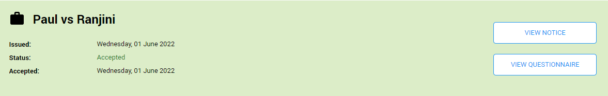

After signing in, the Custodian Portal will appear. You will see any tasks to be completed or the below message.
_Custodian_Portal.bmp)
Click the down arrow next to the profile name to sign out.

The Custodian Portal is where a Custodian or Manager can view all details pertaining to Holds that have been issued.
To access the Custodian portal:
After signing in, the Custodian Portal will appear. You will see any tasks to be completed or the below message.
Click the down arrow next to the profile name to sign out.
Click the down arrow next to the profile name.
Select Custodian Portal.

The Custodian Portal window will appear.

There are two areas:
Holds waiting for your acceptance where you can:
View Notice
The Hold Notice displays the email body and subject. If applicable, you can download attachments.
Fill in Questionnaire/ View Questionnaire
Accept
Under the Hold name you can view the Issued date and Status.

Accepted Holds where you can:
View Notice
The Hold Notice displays the email body and subject. If applicable, you can download attachments.
View Questionnaire
Under the Hold name you can view the Issued date, Status and Accepted date.
